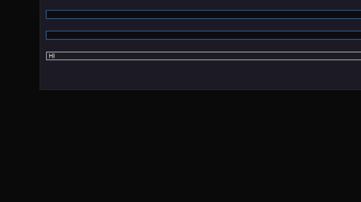

Problem:
The Unicode Dialog, which can be accessed with (win + .), is not trivialy implemented in Windows, as it doesn't cause a WM_UNICODE or similar Key Event,
but needs some additional Processing, the following code is only for custom controls, the native "EDIT" controls provided by Windows already handle the Dialog correctly
Prerequisits:
For the Example, I used wxWidgets, as I was working on a little project while this problem occured to me,
but the code should be very similar for a normal Win32 application.
Positioning The Dialog Window:
The Position of the Window is determined by the structure contained in the lParam of the WM_IME_REQUEST Message,
with (wParam == IMR_QUERYCHARPOSITION).
So aligning the Control with the Dialog is done like the following:
virtual LRESULT MSWWindowProc(UINT message,
WPARAM wParam,
LPARAM lParam) override // wxWidgets native WndProc function override
{
if(message == WM_IME_REQUEST)
{
if(IMR_QUERYCHARPOSITION == wParam)
{
IMECHARPOSITION* ptr = (IMECHARPOSITION*)lParam;
int px,py = 0;
this->GetScreenPosition(&px, &py); // Screen Position of the Control
wxSize ctrlSize = this->GetSize(); // Size of the Control
ptr->pt.x = px;
ptr->pt.y = py + sz.y / 2;
return 1; // IMPORTANT, this tells windows, that the message was Processed
}
}
return wxWindow::MSWWindowProc(message, wParam, lParam); // wxWidgets DefWndProc for wxWindow
}
Getting The Unicode Values:
We have 2 options for taking in the unicode strings, both handle the WM_IME_COMPOSITION
event send, by the dialog:
Option 1 (DIRECT):
in this method the new unicode character is directly appended to the stored string,
the message will have in its lParam a GCS_COMPCLAUSE bit set to tell the application that a new unicode character is available
Getting the string is performed by the Imm/... functions:
bool HandleInput(wxWindow* wnd, UINT message, WPARAM wParam, LPARAM lParam)
{
static uint32_t ImmCompStrIdx = 0;
if(message == WM_IME_STARTCOMPOSITION || message == WM_IME_ENDCOMPOSITION)
{
ImmCompStrIdx = 0; // reset the idx every time The Dialog starts / ends
}
if(message == WM_IME_COMPOSITION)
{
if(lParam & GCS_COMPCLAUSE)
{
HWND hWnd = wnd->GetHandle(); // wxWidgets specific
HIMC hIMC = ImmGetContext(hWnd);
LONG out = ImmGetCompositionStringW(hIMC, GCS_COMPSTR, nullptr, 0);
if(out > 0)
{
#ifdef _UNICODE
wchar_t* buf = new wchar_t[out/2 + 1];
out = ImmGetCompositionStringW(hIMC, GCS_COMPSTR, buf, out + 1) / 2;
#else
char* buf = new char[out + 1];
out = ImmGetCompositionStringA(hIMC, GCS_COMPSTR, buf, out + 1);
#endif
for(uint32_t i = ImmCompStrIdx; i < out; i++)
{
wnd->str.append(buf[i]);
}
delete[] buf;
ImmCompStrIdx = out;
wnd->Refresh();
}
}
return true; // message handled
}
return false; // message not handled
}
Option 2 (END):
Add the Whole Input at the end of the dialog, the way i show it will not give a visible buffer for which
unicode items were already selected, but this can easily be implemented with Option 1 or a native "EDIT" window,
this time the lParam needs to have the GCS_RESULTSTR bit set:
bool HandleInput(wxWindow* wnd, UINT message, WPARAM wParam, LPARAM lParam)
{
if(message == WM_IME_COMPOSITION)
{
if(lParam & GCS_RESULTSTR)
{
HWND hWnd = wnd->GetHandle(); // wxWidgets specific
HIMC hIMC = ImmGetContext(hWnd);
LONG out = ImmGetCompositionStringW(hIMC, GCS_RESULTSTR, nullptr, 0);
if(out > 0)
{
#ifdef _UNICODE
wchar_t* buf = new wchar_t[out/2 + 1];
out = ImmGetCompositionStringW(hIMC, GCS_RESULTSTR, buf, out + 1) / 2;
#else
char* buf = new char[out + 1];
out = ImmGetCompositionStringA(hIMC, GCS_RESULTSTR, buf, out + 1);
#endif
for(uint32_t i = 0; i < out; i++)
{
wnd->str.append(buf[i]);
}
delete[] buf;
wnd->Refresh();
}
}
return true; // message handled
}
return false; // message not handled
}
Result:
Now we need to return the main WndProc function whenever the WM_IME_COMPOSITION
is send:

virtual LRESULT MSWWindowProc(UINT message,
WPARAM wParam,
LPARAM lParam) override
{
if(message == WM_IME_REQUEST){ ... } // Positioning
if(HandleInput(this, message, wParam, lParam))
return 0; // Don't pass the message on to the DefWndProc, we just handled it ourselfs
return wxWindow::MSWWindowProc(message, wParam, lParam);
}